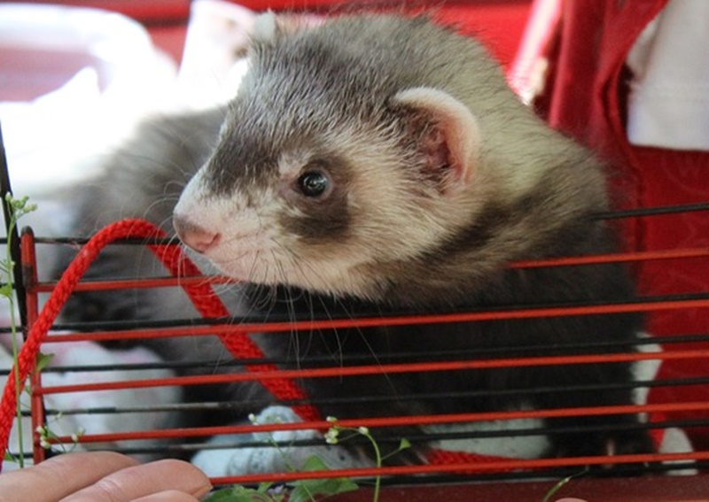
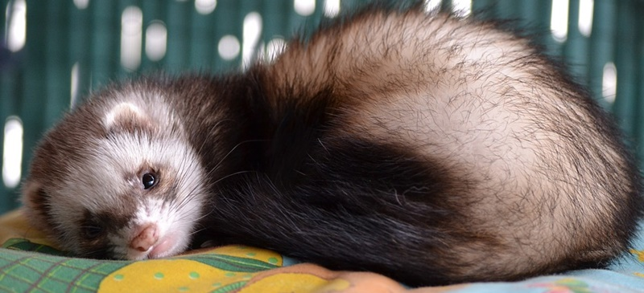
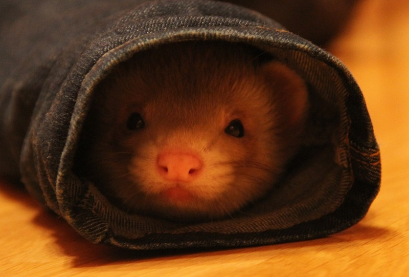
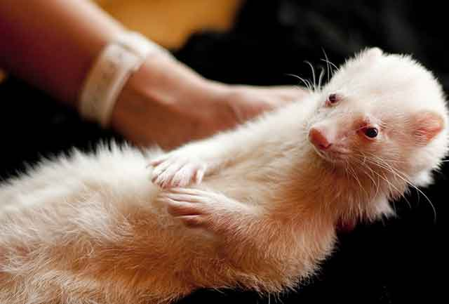

페럿 냄새?! 페럿 목욕시키는 방법
이색 애완동물로 뜨고 있는 페럿. 페럿의 귀여운 행동이 화제가 되기도 하고, 귀여운 짤로도 만들어지기도 하는데요. 귀여운 모습과 달리 페럿은 특유의 냄새를 풍기기도 합니다. 마치 사향 비슷한 냄새가 나는 데요. 이런 냄새가 나는 이유는 페럿의 몸에 기름샘이 나오고 이 기름샘은 피부 털을 윤기 있게 보호하기 위함이라고 하는데요. 이 분비물이 피부 겉으로 코팅되면서 냄새가 나는 것 입니다. 그래서 페럿은 목욕을 자주 시키면 좋지 않습니다. 코팅액을 벗기는 것과 같아 오히려 피부를 상하게 한다고 하네요. 하지만 냄새가 지독해 참기 힘들다면 1~2달에 한 번 정도 씻겨 주는게 좋습니다. 페럿 목욕을 시켜야 한다면 어떻게 하면 좋을까요? 목욕시키는 방법에 대해 알려드립니다!
"중성화가 도움될 수 있어요"
목욕을 시키기 전에 한가지 알아둬야 할 사항이 있다면, 바로 중성화입니다. 페럿도 중성화를 할 수 있는데, 중성화하지 않았을 때와 했을 때의 냄새가 크게 달라질수 있습니다. 물론, 중성화에 대한 선택은 판단하기 어려운 부분이긴 하지만 냄새를 많이 줄일수 있다고 하네요.
"잦은 목욕은 지양해요"
앞서 설명해 드린 것과 같이 기름샘은 페럿의 피부를 보호하는 역할을 합니다. 그런데 자주 목욕을 시킨다면 당연히 피부를 보호하는 지방성분을 벗기게 되는거 겠죠?? 이로 인해 '가려움증'을 가질 수 있는 데요. 냄새로 인해 발생하는 괴로움은 충분히 공감이 되지만, 잦은 목욕은 페럿의 건강을 위해서라도 자제해야 합니다. 만약 목욕을 해야 한다면 1~2달에 한 번, 냄새가 심할 때는 주변 생활용품을 자주 바꿔주는 게 도움이 될 수 있습니다.
"페럿 목욕시키는 방법"
욕조나 목욕통에 물을 5cm 정도 받아 둡니다. 너무 깊은 물은 씻기는 데 오히려 힘들 수 있으므로 적게 받아주는 것이 좋습니다.
페럿의 몸을 전체적으로 물로 씻어주고 페럿의 몸 전체를 샴푸를 묻혀 골고루 거품을 내고 문질러 줍니다. 이때 주의해야 할 점은 샴푸가 페럿의 눈과 귀에 샴푸가 들어가지 않도록 해야 합니다. 샴푸가 들어가서 염증이 발생할 수 있기때문이죠! 더불어 거품 낸 몸을 깨끗이 씻겨줍니다. 샴푸가 남아있으면 피부병의 원인이 될 수 있으므로 물로 꼼꼼히 씻겨주는것이 정말 좋습니다.
샤워를 마친 페럿!스스로 혼자 몸을 털어 물기를 걷어내는 데요. 그런데도 아직도 물기가 남아있다면, 수건 1~2장으로 물기를 제거 해주시는게 좋습니다. 스스로 몸을 말리기 위해 수건으로 들어가기도 하니 바닥에 수건을 깔아두는 것도 방법이겠죠? 페럿은 귀여운 외모와 달리 냄새에 적응하지 못해 키우기 힘들 수 있습니다. 따라서 냄새로 인해 파양하는 일이 없도록 페럿에 관한 냄새 관리법을 찾아보는 것도 좋습니다!!
[출처] 페럿 냄새?! 페럿 목욕시키는 방법 ｜ 작성자 땡자